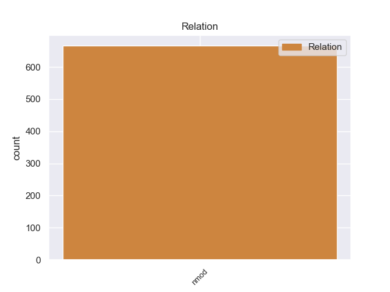
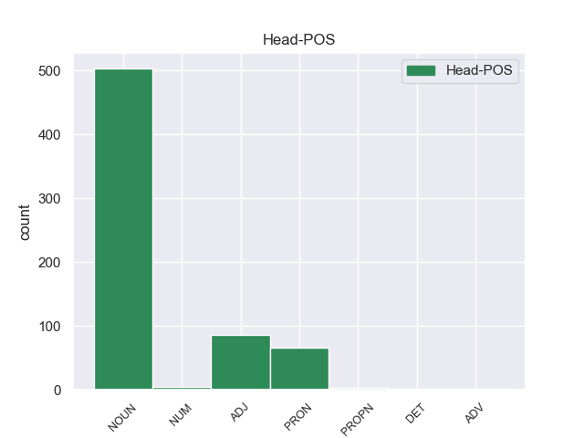
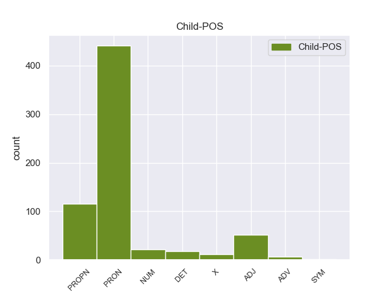

Distribution of features within this leaf



Agreement Rules sorted by frequency.
- When the dependent token is the nominal modifier(nmod) of the head token, and the head token is NOUN and the dependent token is PRON.
1 A _ _ _ _ 0 _ _ _
2 continuación _ _ _ _ 0 _ _ _
3 , _ _ _ _ 0 _ _ _
4 sonarán _ _ _ _ 0 _ _ _
5 los _ _ _ _ 0 _ _ _
6 ritmos _ _ _ _ 0 _ _ _
7 más _ _ _ _ 0 _ _ _
8 intensos _ _ _ _ 0 _ _ _
9 de _ _ _ _ 0 _ _ _
10 los _ _ _ _ 0 _ _ _
11 llanos _ _ _ _ 0 _ _ _
12 interpretados _ _ _ _ 0 _ _ _
13 por _ _ _ _ 0 _ _ _
14 una _ _ _ _ 0 _ _ _
15 agrupación _ _ _ _ 0 _ _ _
16 que _ _ _ _ 0 _ _ _
17 romperá _ _ _ _ 0 _ _ _
18 esquemas _ _ _ _ 0 _ _ _
19 : _ _ _ _ 0 _ _ _
20 el _ _ _ _ 0 _ _ _
21 Ensamble _ _ _ _ 0 _ _ _
22 de _ _ _ _ 0 _ _ _
23 Arpas _ _ _ _ 0 _ _ _
24 de _ _ _ _ 0 _ _ _
25 la _ _ _ _ 0 _ _ _
26 Orquesta _ _ _ _ 0 _ _ _
27 de _ _ _ _ 0 _ _ _
28 Música _ _ _ _ 0 _ _ _
29 Popular _ _ _ _ 0 _ _ _
30 de _ _ _ _ 0 _ _ _
31 el _ _ _ _ 0 _ _ _
32 Estado _ _ _ _ 0 _ _ _
33 Guárico _ _ _ _ 0 _ _ _
34 , _ _ _ _ 0 _ _ _
35 integrado _ _ _ _ 0 _ _ _
36 por _ _ _ _ 0 _ _ _
37 14 _ _ _ _ 0 _ _ _
38 ejecutantes _ _ _ _ 0 _ _ _
39 , _ _ _ _ 0 _ _ _
40 todos _ _ _ _ 0 _ _ _
41 formados _ _ _ _ 0 _ _ _
42 por _ _ _ _ 0 _ _ _
43 El _ _ _ _ 0 _ _ _
44 Sistema _ _ _ _ 0 _ _ _
45 , _ _ _ _ 0 _ _ _
46 siendo _ _ _ _ 0 _ _ _
47 algunos _ _ _ _ 0 _ _ _
48 de _ _ _ _ 0 _ _ _
49 ellos él PRON _ Case=Acc,Nom|Gender=Masc|Number=Plur|Person=3|PronType=Prs 50 nmod _ _
50 ganadores ganadore NOUN _ Gender=Masc|Number=Plur 0 _ _ _
51 de _ _ _ _ 0 _ _ _
52 el _ _ _ _ 0 _ _ _
53 reconocido _ _ _ _ 0 _ _ _
54 Festival _ _ _ _ 0 _ _ _
55 Internacional _ _ _ _ 0 _ _ _
56 de _ _ _ _ 0 _ _ _
57 Arpas _ _ _ _ 0 _ _ _
58 Infantil _ _ _ _ 0 _ _ _
59 y _ _ _ _ 0 _ _ _
60 Adultos _ _ _ _ 0 _ _ _
61 de _ _ _ _ 0 _ _ _
62 Villavicencio _ _ _ _ 0 _ _ _
63 , _ _ _ _ 0 _ _ _
64 Colombia _ _ _ _ 0 _ _ _
65 . _ _ _ _ 0 _ _ _
1 Hijo hijo NOUN _ Gender=Masc|Number=Sing 0 _ _ _
2 de _ _ _ _ 0 _ _ _
3 don _ _ _ _ 0 _ _ _
4 Félix félix PROPN _ Gender=Masc|Number=Sing 1 nmod _ _
5 Antonio _ _ _ _ 0 _ _ _
6 Vásquez _ _ _ _ 0 _ _ _
7 de _ _ _ _ 0 _ _ _
8 Novoa _ _ _ _ 0 _ _ _
9 y _ _ _ _ 0 _ _ _
10 López _ _ _ _ 0 _ _ _
11 de _ _ _ _ 0 _ _ _
12 Artigas _ _ _ _ 0 _ _ _
13 y _ _ _ _ 0 _ _ _
14 doña _ _ _ _ 0 _ _ _
15 Mariana _ _ _ _ 0 _ _ _
16 Sanhueza _ _ _ _ 0 _ _ _
17 y _ _ _ _ 0 _ _ _
18 Vergara _ _ _ _ 0 _ _ _
19 . _ _ _ _ 0 _ _ _
1 Estuvo _ _ _ _ 0 _ _ _
2 activo activo ADJ _ Gender=Masc|Number=Sing 0 _ _ _
3 sobre _ _ _ _ 0 _ _ _
4 todo todo PRON _ Gender=Masc|Number=Sing|PronType=Tot 2 nmod _ _
5 en _ _ _ _ 0 _ _ _
6 París _ _ _ _ 0 _ _ _
7 , _ _ _ _ 0 _ _ _
8 donde _ _ _ _ 0 _ _ _
9 se _ _ _ _ 0 _ _ _
10 estableció _ _ _ _ 0 _ _ _
11 en _ _ _ _ 0 _ _ _
12 1844 _ _ _ _ 0 _ _ _
13 . _ _ _ _ 0 _ _ _
1 En _ _ _ _ 0 _ _ _
2 1991 _ _ _ _ 0 _ _ _
3 , _ _ _ _ 0 _ _ _
4 como _ _ _ _ 0 _ _ _
5 ya _ _ _ _ 0 _ _ _
6 está _ _ _ _ 0 _ _ _
7 indicado _ _ _ _ 0 _ _ _
8 en _ _ _ _ 0 _ _ _
9 el _ _ _ _ 0 _ _ _
10 párrafo _ _ _ _ 0 _ _ _
11 anterior _ _ _ _ 0 _ _ _
12 , _ _ _ _ 0 _ _ _
13 se _ _ _ _ 0 _ _ _
14 creó _ _ _ _ 0 _ _ _
15 un _ _ _ _ 0 _ _ _
16 equipo equipo NOUN _ Gender=Masc|Number=Sing 0 _ _ _
17 ad _ _ _ _ 0 _ _ _
18 hoc hoc ADJ _ Gender=Masc|Number=Sing 16 nmod _ _
19 para _ _ _ _ 0 _ _ _
20 averiguar _ _ _ _ 0 _ _ _
21 como _ _ _ _ 0 _ _ _
22 se _ _ _ _ 0 _ _ _
23 podía _ _ _ _ 0 _ _ _
24 desarrollar _ _ _ _ 0 _ _ _
25 el _ _ _ _ 0 _ _ _
26 Dialogo _ _ _ _ 0 _ _ _
27 Social _ _ _ _ 0 _ _ _
28 , _ _ _ _ 0 _ _ _
29 este _ _ _ _ 0 _ _ _
30 equipo _ _ _ _ 0 _ _ _
31 estaba _ _ _ _ 0 _ _ _
32 formado _ _ _ _ 0 _ _ _
33 por _ _ _ _ 0 _ _ _
34 representantes _ _ _ _ 0 _ _ _
35 de _ _ _ _ 0 _ _ _
36 todas _ _ _ _ 0 _ _ _
37 las _ _ _ _ 0 _ _ _
38 organizaciones _ _ _ _ 0 _ _ _
39 relacionadas _ _ _ _ 0 _ _ _
40 con _ _ _ _ 0 _ _ _
41 CES _ _ _ _ 0 _ _ _
42 , _ _ _ _ 0 _ _ _
43 UNICE _ _ _ _ 0 _ _ _
44 y _ _ _ _ 0 _ _ _
45 CEEP _ _ _ _ 0 _ _ _
46 ; _ _ _ _ 0 _ _ _
1 Algunos alguno PRON _ Gender=Masc|Number=Plur|PronType=Ind 0 _ _ _
2 de _ _ _ _ 0 _ _ _
3 ellos él PRON _ Case=Acc,Nom|Gender=Masc|Number=Plur|Person=3|PronType=Prs 1 nmod _ _
4 estaban _ _ _ _ 0 _ _ _
5 dispuestos _ _ _ _ 0 _ _ _
6 a _ _ _ _ 0 _ _ _
7 atacar _ _ _ _ 0 _ _ _
8 y _ _ _ _ 0 _ _ _
9 el _ _ _ _ 0 _ _ _
10 22 _ _ _ _ 0 _ _ _
11 de _ _ _ _ 0 _ _ _
12 junio _ _ _ _ 0 _ _ _
13 el _ _ _ _ 0 _ _ _
14 strategos _ _ _ _ 0 _ _ _
15 de _ _ _ _ 0 _ _ _
16 Macedonia _ _ _ _ 0 _ _ _
17 Juan _ _ _ _ 0 _ _ _
18 Aplakes _ _ _ _ 0 _ _ _
19 se _ _ _ _ 0 _ _ _
20 dirigió _ _ _ _ 0 _ _ _
21 a _ _ _ _ 0 _ _ _
22 Miguel _ _ _ _ 0 _ _ _
23 y _ _ _ _ 0 _ _ _
24 dijo _ _ _ _ 0 _ _ _
25 : _ _ _ _ 0 _ _ _
26 " _ _ _ _ 0 _ _ _
27 ¿ _ _ _ _ 0 _ _ _
28 Cuánto _ _ _ _ 0 _ _ _
29 vamos _ _ _ _ 0 _ _ _
30 a _ _ _ _ 0 _ _ _
31 esperar _ _ _ _ 0 _ _ _
32 y _ _ _ _ 0 _ _ _
33 morir _ _ _ _ 0 _ _ _
34 ? _ _ _ _ 0 _ _ _
1 Los _ _ _ _ 0 _ _ _
2 clientes _ _ _ _ 0 _ _ _
3 que _ _ _ _ 0 _ _ _
4 no _ _ _ _ 0 _ _ _
5 vayan _ _ _ _ 0 _ _ _
6 a _ _ _ _ 0 _ _ _
7 viajar _ _ _ _ 0 _ _ _
8 en _ _ _ _ 0 _ _ _
9 estas _ _ _ _ 0 _ _ _
10 fechas _ _ _ _ 0 _ _ _
11 también _ _ _ _ 0 _ _ _
12 podrán _ _ _ _ 0 _ _ _
13 probar _ _ _ _ 0 _ _ _
14 suerte _ _ _ _ 0 _ _ _
15 con _ _ _ _ 0 _ _ _
16 un _ _ _ _ 0 _ _ _
17 divertido _ _ _ _ 0 _ _ _
18 juego juego NOUN _ Gender=Masc|Number=Sing 0 _ _ _
19 on _ _ _ _ 0 _ _ _
20 - _ _ _ _ 0 _ _ _
21 line line X _ Gender=Masc|Number=Sing 18 nmod _ _
22 , _ _ _ _ 0 _ _ _
23 en _ _ _ _ 0 _ _ _
24 el _ _ _ _ 0 _ _ _
25 que _ _ _ _ 0 _ _ _
26 tendrán _ _ _ _ 0 _ _ _
27 que _ _ _ _ 0 _ _ _
28 encontrar _ _ _ _ 0 _ _ _
29 los _ _ _ _ 0 _ _ _
30 puntos _ _ _ _ 0 _ _ _
31 escondidos _ _ _ _ 0 _ _ _
32 en _ _ _ _ 0 _ _ _
33 los _ _ _ _ 0 _ _ _
34 asientos _ _ _ _ 0 _ _ _
35 de _ _ _ _ 0 _ _ _
36 un _ _ _ _ 0 _ _ _
37 A _ _ _ _ 0 _ _ _
38 - _ _ _ _ 0 _ _ _
39 320 _ _ _ _ 0 _ _ _
40 virtual _ _ _ _ 0 _ _ _
41 . _ _ _ _ 0 _ _ _
1 Son _ _ _ _ 0 _ _ _
2 jugadores _ _ _ _ 0 _ _ _
3 jóvenes _ _ _ _ 0 _ _ _
4 , _ _ _ _ 0 _ _ _
5 con _ _ _ _ 0 _ _ _
6 proyección _ _ _ _ 0 _ _ _
7 y _ _ _ _ 0 _ _ _
8 pueden _ _ _ _ 0 _ _ _
9 venir _ _ _ _ 0 _ _ _
10 muy _ _ _ _ 0 _ _ _
11 bien _ _ _ _ 0 _ _ _
12 a _ _ _ _ 0 _ _ _
13 el _ _ _ _ 0 _ _ _
14 once _ _ _ _ 0 _ _ _
15 titular titular NOUN _ Number=Sing 0 _ _ _
16 de _ _ _ _ 0 _ _ _
17 el el DET _ Definite=Def|Gender=Masc|Number=Sing|PronType=Art 15 nmod _ _
18 de _ _ _ _ 0 _ _ _
19 Santpedor _ _ _ _ 0 _ _ _
20 . _ _ _ _ 0 _ _ _
1 Así _ _ _ _ 0 _ _ _
2 , _ _ _ _ 0 _ _ _
3 entiende _ _ _ _ 0 _ _ _
4 que _ _ _ _ 0 _ _ _
5 el _ _ _ _ 0 _ _ _
6 que _ _ _ _ 0 _ _ _
7 alguien _ _ _ _ 0 _ _ _
8 haga _ _ _ _ 0 _ _ _
9 un _ _ _ _ 0 _ _ _
10 resultado _ _ _ _ 0 _ _ _
11 extraordinario _ _ _ _ 0 _ _ _
12 -- _ _ _ _ 0 _ _ _
13 como _ _ _ _ 0 _ _ _
14 ganar _ _ _ _ 0 _ _ _
15 ocho _ _ _ _ 0 _ _ _
16 partidas _ _ _ _ 0 _ _ _
17 de _ _ _ _ 0 _ _ _
18 nueve _ _ _ _ 0 _ _ _
19 jugadas _ _ _ _ 0 _ _ _
20 -- _ _ _ _ 0 _ _ _
21 es _ _ _ _ 0 _ _ _
22 mucho _ _ _ _ 0 _ _ _
23 más _ _ _ _ 0 _ _ _
24 improbable _ _ _ _ 0 _ _ _
25 que _ _ _ _ 0 _ _ _
26 ganar _ _ _ _ 0 _ _ _
27 seis _ _ _ _ 0 _ _ _
28 partidas partida NOUN _ Gender=Fem|Number=Plur 0 _ _ _
29 de _ _ _ _ 0 _ _ _
30 nueve nueve NUM _ Number=Plur|NumType=Card 28 nmod _ _
31 , _ _ _ _ 0 _ _ _
32 aún _ _ _ _ 0 _ _ _
33 cuando _ _ _ _ 0 _ _ _
34 en _ _ _ _ 0 _ _ _
35 el _ _ _ _ 0 _ _ _
36 primer _ _ _ _ 0 _ _ _
37 caso _ _ _ _ 0 _ _ _
38 los _ _ _ _ 0 _ _ _
39 jugadores _ _ _ _ 0 _ _ _
40 fueran _ _ _ _ 0 _ _ _
41 más _ _ _ _ 0 _ _ _
42 débiles _ _ _ _ 0 _ _ _
43 . _ _ _ _ 0 _ _ _
1 Vale _ _ _ _ 0 _ _ _
2 la _ _ _ _ 0 _ _ _
3 pena _ _ _ _ 0 _ _ _
4 desviar _ _ _ _ 0 _ _ _
5 se _ _ _ _ 0 _ _ _
6 para _ _ _ _ 0 _ _ _
7 visitar _ _ _ _ 0 _ _ _
8 lo _ _ _ _ 0 _ _ _
9 , _ _ _ _ 0 _ _ _
10 ya _ _ _ _ 0 _ _ _
11 que _ _ _ _ 0 _ _ _
12 es _ _ _ _ 0 _ _ _
13 de _ _ _ _ 0 _ _ _
14 lejos lejos ADV _ Gender=Masc|Number=Sing 18 nmod _ _
15 , _ _ _ _ 0 _ _ _
16 el _ _ _ _ 0 _ _ _
17 mejor _ _ _ _ 0 _ _ _
18 restaurnate restaurnate NOUN _ Gender=Masc|Number=Sing 0 _ _ _
19 de _ _ _ _ 0 _ _ _
20 los _ _ _ _ 0 _ _ _
21 que _ _ _ _ 0 _ _ _
22 he _ _ _ _ 0 _ _ _
23 conocido _ _ _ _ 0 _ _ _
24 por _ _ _ _ 0 _ _ _
25 la _ _ _ _ 0 _ _ _
26 zona _ _ _ _ 0 _ _ _
27 .ç _ _ _ _ 0 _ _ _
1 Jazmin _ _ _ _ 0 _ _ _
2 es _ _ _ _ 0 _ _ _
3 todo _ _ _ _ 0 _ _ _
4 lo _ _ _ _ 0 _ _ _
5 contrario contrario ADJ _ Gender=Masc|Number=Sing 8 nmod _ _
6 , _ _ _ _ 0 _ _ _
7 es _ _ _ _ 0 _ _ _
8 tímida tímido ADJ _ Gender=Fem|Number=Sing 0 _ _ _
9 y _ _ _ _ 0 _ _ _
10 callada _ _ _ _ 0 _ _ _
11 , _ _ _ _ 0 _ _ _
12 pero _ _ _ _ 0 _ _ _
13 siempre _ _ _ _ 0 _ _ _
14 es _ _ _ _ 0 _ _ _
15 arrastrada _ _ _ _ 0 _ _ _
16 por _ _ _ _ 0 _ _ _
17 las _ _ _ _ 0 _ _ _
18 locuras _ _ _ _ 0 _ _ _
19 y _ _ _ _ 0 _ _ _
20 travesuras _ _ _ _ 0 _ _ _
21 que _ _ _ _ 0 _ _ _
22 inventa _ _ _ _ 0 _ _ _
23 Alma _ _ _ _ 0 _ _ _
24 . _ _ _ _ 0 _ _ _
1 Los _ _ _ _ 0 _ _ _
2 temporales _ _ _ _ 0 _ _ _
3 de _ _ _ _ 0 _ _ _
4 el _ _ _ _ 0 _ _ _
5 lunes _ _ _ _ 0 _ _ _
6 y _ _ _ _ 0 _ _ _
7 martes _ _ _ _ 0 _ _ _
8 fueron _ _ _ _ 0 _ _ _
9 considerados _ _ _ _ 0 _ _ _
10 como _ _ _ _ 0 _ _ _
11 los _ _ _ _ 0 _ _ _
12 peores _ _ _ _ 0 _ _ _
13 sufridos _ _ _ _ 0 _ _ _
14 por _ _ _ _ 0 _ _ _
15 Río _ _ _ _ 0 _ _ _
16 de _ _ _ _ 0 _ _ _
17 Janeiro _ _ _ _ 0 _ _ _
18 en _ _ _ _ 0 _ _ _
19 40 _ _ _ _ 0 _ _ _
20 años _ _ _ _ 0 _ _ _
21 y _ _ _ _ 0 _ _ _
22 los _ _ _ _ 0 _ _ _
23 meteorólogos _ _ _ _ 0 _ _ _
24 dijeron _ _ _ _ 0 _ _ _
25 que _ _ _ _ 0 _ _ _
26 el _ _ _ _ 0 _ _ _
27 volumen _ _ _ _ 0 _ _ _
28 de _ _ _ _ 0 _ _ _
29 agua _ _ _ _ 0 _ _ _
30 que _ _ _ _ 0 _ _ _
31 cayó _ _ _ _ 0 _ _ _
32 en _ _ _ _ 0 _ _ _
33 doce _ _ _ _ 0 _ _ _
34 horas _ _ _ _ 0 _ _ _
35 es _ _ _ _ 0 _ _ _
36 más _ _ _ _ 0 _ _ _
37 de _ _ _ _ 0 _ _ _
38 el _ _ _ _ 0 _ _ _
39 doble doble ADJ _ Gender=Masc|Number=Sing 0 _ _ _
40 de _ _ _ _ 0 _ _ _
41 el el DET _ Definite=Def|Gender=Masc|Number=Sing|PronType=Art 39 nmod _ _
42 esperado _ _ _ _ 0 _ _ _
43 para _ _ _ _ 0 _ _ _
44 todo _ _ _ _ 0 _ _ _
45 el _ _ _ _ 0 _ _ _
46 mes _ _ _ _ 0 _ _ _
47 de _ _ _ _ 0 _ _ _
48 abril _ _ _ _ 0 _ _ _
49 . _ _ _ _ 0 _ _ _
1 Pero _ _ _ _ 0 _ _ _
2 bueno _ _ _ _ 0 _ _ _
3 , _ _ _ _ 0 _ _ _
4 cada _ _ _ _ 0 _ _ _
5 cual _ _ _ _ 0 _ _ _
6 intenta _ _ _ _ 0 _ _ _
7 pensar _ _ _ _ 0 _ _ _
8 lo _ _ _ _ 0 _ _ _
9 mejor mejor ADV _ Number=Sing 0 _ _ _
10 de _ _ _ _ 0 _ _ _
11 sí sí PRON _ Number=Sing|Person=3|Poss=Yes|PronType=Prs 9 nmod _ _
12 mismo _ _ _ _ 0 _ _ _
13 , _ _ _ _ 0 _ _ _
14 y _ _ _ _ 0 _ _ _
15 ni _ _ _ _ 0 _ _ _
16 siquiera _ _ _ _ 0 _ _ _
17 ellos _ _ _ _ 0 _ _ _
18 pueden _ _ _ _ 0 _ _ _
19 sustraer _ _ _ _ 0 _ _ _
20 se _ _ _ _ 0 _ _ _
21 a _ _ _ _ 0 _ _ _
22 las _ _ _ _ 0 _ _ _
23 referencias _ _ _ _ 0 _ _ _
24 conductuales _ _ _ _ 0 _ _ _
25 de _ _ _ _ 0 _ _ _
26 la _ _ _ _ 0 _ _ _
27 modernidad _ _ _ _ 0 _ _ _
28 , _ _ _ _ 0 _ _ _
29 a _ _ _ _ 0 _ _ _
30 la _ _ _ _ 0 _ _ _
31 que _ _ _ _ 0 _ _ _
32 tanto _ _ _ _ 0 _ _ _
33 odian _ _ _ _ 0 _ _ _
34 . _ _ _ _ 0 _ _ _
1 Tres tres NUM _ Number=Plur|NumType=Card 0 _ _ _
2 de _ _ _ _ 0 _ _ _
3 las _ _ _ _ 0 _ _ _
4 cuatro cuatro NUM _ Number=Plur|NumType=Card 1 nmod _ _
5 son _ _ _ _ 0 _ _ _
6 perpendiculares _ _ _ _ 0 _ _ _
7 hacia _ _ _ _ 0 _ _ _
8 la _ _ _ _ 0 _ _ _
9 Calle _ _ _ _ 0 _ _ _
10 Canal _ _ _ _ 0 _ _ _
11 , _ _ _ _ 0 _ _ _
12 que _ _ _ _ 0 _ _ _
13 cruza _ _ _ _ 0 _ _ _
14 Broadway _ _ _ _ 0 _ _ _
15 ( _ _ _ _ 0 _ _ _
16 plataformas _ _ _ _ 0 _ _ _
17 principales _ _ _ _ 0 _ _ _
18 de _ _ _ _ 0 _ _ _
19 la _ _ _ _ 0 _ _ _
20 línea _ _ _ _ 0 _ _ _
21 Broadway _ _ _ _ 0 _ _ _
22 ) _ _ _ _ 0 _ _ _
23 , _ _ _ _ 0 _ _ _
24 la _ _ _ _ 0 _ _ _
25 Calle _ _ _ _ 0 _ _ _
26 Lafayette _ _ _ _ 0 _ _ _
27 ( _ _ _ _ 0 _ _ _
28 plataformas _ _ _ _ 0 _ _ _
29 de _ _ _ _ 0 _ _ _
30 la _ _ _ _ 0 _ _ _
31 línea _ _ _ _ 0 _ _ _
32 de _ _ _ _ 0 _ _ _
33 la _ _ _ _ 0 _ _ _
34 Avenida _ _ _ _ 0 _ _ _
35 Lexington _ _ _ _ 0 _ _ _
36 ) _ _ _ _ 0 _ _ _
37 y _ _ _ _ 0 _ _ _
38 la _ _ _ _ 0 _ _ _
39 Calle _ _ _ _ 0 _ _ _
40 Centre _ _ _ _ 0 _ _ _
41 ( _ _ _ _ 0 _ _ _
42 plataformas _ _ _ _ 0 _ _ _
43 de _ _ _ _ 0 _ _ _
44 la _ _ _ _ 0 _ _ _
45 línea _ _ _ _ 0 _ _ _
46 de _ _ _ _ 0 _ _ _
47 la _ _ _ _ 0 _ _ _
48 Calle _ _ _ _ 0 _ _ _
49 Nassau _ _ _ _ 0 _ _ _
50 ) _ _ _ _ 0 _ _ _
51 . _ _ _ _ 0 _ _ _
1 La _ _ _ _ 0 _ _ _
2 orquesta _ _ _ _ 0 _ _ _
3 está _ _ _ _ 0 _ _ _
4 integrada _ _ _ _ 0 _ _ _
5 por _ _ _ _ 0 _ _ _
6 cuerda _ _ _ _ 0 _ _ _
7 , _ _ _ _ 0 _ _ _
8 dos _ _ _ _ 0 _ _ _
9 flautas _ _ _ _ 0 _ _ _
10 , _ _ _ _ 0 _ _ _
11 dos _ _ _ _ 0 _ _ _
12 oboes _ _ _ _ 0 _ _ _
13 , _ _ _ _ 0 _ _ _
14 dos _ _ _ _ 0 _ _ _
15 clarinetes _ _ _ _ 0 _ _ _
16 , _ _ _ _ 0 _ _ _
17 un _ _ _ _ 0 _ _ _
18 corno corno PROPN _ Gender=Masc|Number=Sing 0 _ _ _
19 di _ _ _ _ 0 _ _ _
20 bassetto bassetto X _ Gender=Masc|Number=Sing 18 nmod _ SpaceAfter=No
21 , _ _ _ _ 0 _ _ _
22 dos _ _ _ _ 0 _ _ _
23 fagotes _ _ _ _ 0 _ _ _
24 , _ _ _ _ 0 _ _ _
25 dos _ _ _ _ 0 _ _ _
26 trompas _ _ _ _ 0 _ _ _
27 , _ _ _ _ 0 _ _ _
28 dos _ _ _ _ 0 _ _ _
29 trompetas _ _ _ _ 0 _ _ _
30 y _ _ _ _ 0 _ _ _
31 timbales _ _ _ _ 0 _ _ _
32 . _ _ _ _ 0 _ _ _
1 En _ _ _ _ 0 _ _ _
2 2006 _ _ _ _ 0 _ _ _
3 , _ _ _ _ 0 _ _ _
4 NCR _ _ _ _ 0 _ _ _
5 compró _ _ _ _ 0 _ _ _
6 IDVelocity _ _ _ _ 0 _ _ _
7 y _ _ _ _ 0 _ _ _
8 la _ _ _ _ 0 _ _ _
9 división _ _ _ _ 0 _ _ _
10 de _ _ _ _ 0 _ _ _
11 cajeros _ _ _ _ 0 _ _ _
12 automáticos _ _ _ _ 0 _ _ _
13 de _ _ _ _ 0 _ _ _
14 Tidel _ _ _ _ 0 _ _ _
15 , _ _ _ _ 0 _ _ _
16 eran _ _ _ _ 0 _ _ _
17 equipamientos _ _ _ _ 0 _ _ _
18 de _ _ _ _ 0 _ _ _
19 alta _ _ _ _ 0 _ _ _
20 seguridad _ _ _ _ 0 _ _ _
21 para _ _ _ _ 0 _ _ _
22 el _ _ _ _ 0 _ _ _
23 mercado _ _ _ _ 0 _ _ _
24 a _ _ _ _ 0 _ _ _
25 el el PRON _ Definite=Def|Gender=Masc|Number=Sing|PronType=Art 0 _ _ _
26 por _ _ _ _ 0 _ _ _
27 menor menor ADJ _ Number=Sing 25 nmod _ _
28 . _ _ _ _ 0 _ _ _
1 Descubre _ _ _ _ 0 _ _ _
2 por _ _ _ _ 0 _ _ _
3 qué _ _ _ _ 0 _ _ _
4 hay _ _ _ _ 0 _ _ _
5 Más _ _ _ _ 0 _ _ _
6 Centro centro PROPN _ Gender=Masc|Number=Sing 0 _ _ _
7 Santa _ _ _ _ 0 _ _ _
8 Fe _ _ _ _ 0 _ _ _
9 para _ _ _ _ 0 _ _ _
10 ti ti PRON _ Number=Sing|Person=1|Poss=Yes|PronType=Prs 6 nmod _ _
11 . _ _ _ _ 0 _ _ _
1 Otras _ _ _ _ 0 _ _ _
2 obras _ _ _ _ 0 _ _ _
3 de _ _ _ _ 0 _ _ _
4 la _ _ _ _ 0 _ _ _
5 época _ _ _ _ 0 _ _ _
6 son _ _ _ _ 0 _ _ _
7 : _ _ _ _ 0 _ _ _
8 Nuevas _ _ _ _ 0 _ _ _
9 mujeres _ _ _ _ 0 _ _ _
10 ( _ _ _ _ 0 _ _ _
11 Xīn _ _ _ _ 0 _ _ _
12 nǚxìng _ _ _ _ 0 _ _ _
13 , _ _ _ _ 0 _ _ _
14 1934 _ _ _ _ 0 _ _ _
15 ) _ _ _ _ 0 _ _ _
16 , _ _ _ _ 0 _ _ _
17 Canción _ _ _ _ 0 _ _ _
18 de _ _ _ _ 0 _ _ _
19 los _ _ _ _ 0 _ _ _
20 pescadores _ _ _ _ 0 _ _ _
21 ( _ _ _ _ 0 _ _ _
22 Yu _ _ _ _ 0 _ _ _
23 guang _ _ _ _ 0 _ _ _
24 qu _ _ _ _ 0 _ _ _
25 , _ _ _ _ 0 _ _ _
26 1934 _ _ _ _ 0 _ _ _
27 ) _ _ _ _ 0 _ _ _
28 y _ _ _ _ 0 _ _ _
29 Corderos _ _ _ _ 0 _ _ _
30 perdidos _ _ _ _ 0 _ _ _
31 ( _ _ _ _ 0 _ _ _
32 Mi _ _ _ _ 0 _ _ _
33 tu tu PROPN _ Gender=Masc|Number=Sing 0 _ _ _
34 de _ _ _ _ 0 _ _ _
35 gao gao PROPN _ Gender=Masc|Number=Sing 33 nmod _ _
36 yang _ _ _ _ 0 _ _ _
37 , _ _ _ _ 0 _ _ _
38 1934 _ _ _ _ 0 _ _ _
39 ) _ _ _ _ 0 _ _ _
40 , _ _ _ _ 0 _ _ _
41 todas _ _ _ _ 0 _ _ _
42 de _ _ _ _ 0 _ _ _
43 Cai _ _ _ _ 0 _ _ _
44 Chusheng _ _ _ _ 0 _ _ _
45 ; _ _ _ _ 0 _ _ _
1 " _ _ _ _ 0 _ _ _
2 Está _ _ _ _ 0 _ _ _
3 claro _ _ _ _ 0 _ _ _
4 que _ _ _ _ 0 _ _ _
5 después _ _ _ _ 0 _ _ _
6 de _ _ _ _ 0 _ _ _
7 un _ _ _ _ 0 _ _ _
8 partido _ _ _ _ 0 _ _ _
9 como _ _ _ _ 0 _ _ _
10 el el PRON _ Definite=Def|Gender=Masc|Number=Sing|PronType=Art 0 _ _ _
11 de _ _ _ _ 0 _ _ _
12 el _ _ _ _ 0 _ _ _
13 martes martes PROPN _ Gender=Masc|Number=Sing 10 nmod _ _
14 te _ _ _ _ 0 _ _ _
15 vienen _ _ _ _ 0 _ _ _
16 cosas _ _ _ _ 0 _ _ _
17 a _ _ _ _ 0 _ _ _
18 la _ _ _ _ 0 _ _ _
19 cabeza _ _ _ _ 0 _ _ _
20 . _ _ _ _ 0 _ _ _
1 Nadadora _ _ _ _ 0 _ _ _
2 alemana _ _ _ _ 0 _ _ _
3 que _ _ _ _ 0 _ _ _
4 ganó _ _ _ _ 0 _ _ _
5 ocho _ _ _ _ 0 _ _ _
6 medallas _ _ _ _ 0 _ _ _
7 olímpicas _ _ _ _ 0 _ _ _
8 ( _ _ _ _ 0 _ _ _
9 cuatro cuatro NUM _ Number=Plur|NumType=Card 0 _ _ _
10 de _ _ _ _ 0 _ _ _
11 ellas él PRON _ Case=Acc,Nom|Gender=Masc|Number=Plur|Person=3|PronType=Prs 9 nmod _ _
12 de _ _ _ _ 0 _ _ _
13 oro _ _ _ _ 0 _ _ _
14 ) _ _ _ _ 0 _ _ _
15 y _ _ _ _ 0 _ _ _
16 batió _ _ _ _ 0 _ _ _
17 27 _ _ _ _ 0 _ _ _
18 récords _ _ _ _ 0 _ _ _
19 de _ _ _ _ 0 _ _ _
20 el _ _ _ _ 0 _ _ _
21 mundo _ _ _ _ 0 _ _ _
22 . _ _ _ _ 0 _ _ _
Disagree Examples:
1 Trato _ _ _ _ 0 _ _ _
2 rudo _ _ _ _ 0 _ _ _
3 y _ _ _ _ 0 _ _ _
4 poco _ _ _ _ 0 _ _ _
5 amable _ _ _ _ 0 _ _ _
6 con _ _ _ _ 0 _ _ _
7 el _ _ _ _ 0 _ _ _
8 cliente _ _ _ _ 0 _ _ _
9 , _ _ _ _ 0 _ _ _
10 productos _ _ _ _ 0 _ _ _
11 no _ _ _ _ 0 _ _ _
12 completamente _ _ _ _ 0 _ _ _
13 nuevos _ _ _ _ 0 _ _ _
14 , _ _ _ _ 0 _ _ _
15 almacén _ _ _ _ 0 _ _ _
16 sucio _ _ _ _ 0 _ _ _
17 y _ _ _ _ 0 _ _ _
18 desordenado _ _ _ _ 0 _ _ _
19 , _ _ _ _ 0 _ _ _
20 y _ _ _ _ 0 _ _ _
21 servicio _ _ _ _ 0 _ _ _
22 postventa _ _ _ _ 0 _ _ _
23 inexistente _ _ _ _ 0 _ _ _
24 , _ _ _ _ 0 _ _ _
25 sobre _ _ _ _ 0 _ _ _
26 todo todo PRON _ Gender=Masc|Number=Sing|PronType=Tot 28 nmod _ _
27 con _ _ _ _ 0 _ _ _
28 productos producto NOUN _ Gender=Masc|Number=Plur 0 _ _ _
29 pequeños _ _ _ _ 0 _ _ _
30 . _ _ _ _ 0 _ _ _
1 Surtainville _ _ _ _ 0 _ _ _
2 es _ _ _ _ 0 _ _ _
3 una _ _ _ _ 0 _ _ _
4 población _ _ _ _ 0 _ _ _
5 y _ _ _ _ 0 _ _ _
6 comuna _ _ _ _ 0 _ _ _
7 francesa _ _ _ _ 0 _ _ _
8 , _ _ _ _ 0 _ _ _
9 situada _ _ _ _ 0 _ _ _
10 en _ _ _ _ 0 _ _ _
11 la _ _ _ _ 0 _ _ _
12 región _ _ _ _ 0 _ _ _
13 de _ _ _ _ 0 _ _ _
14 Baja _ _ _ _ 0 _ _ _
15 Normandía _ _ _ _ 0 _ _ _
16 , _ _ _ _ 0 _ _ _
17 departamento _ _ _ _ 0 _ _ _
18 de _ _ _ _ 0 _ _ _
19 Mancha _ _ _ _ 0 _ _ _
20 , _ _ _ _ 0 _ _ _
21 en _ _ _ _ 0 _ _ _
22 el _ _ _ _ 0 _ _ _
23 distrito _ _ _ _ 0 _ _ _
24 de _ _ _ _ 0 _ _ _
25 Cherbourg _ _ _ _ 0 _ _ _
26 - _ _ _ _ 0 _ _ _
27 Octeville _ _ _ _ 0 _ _ _
28 y _ _ _ _ 0 _ _ _
29 cantón cantón NOUN _ Gender=Masc|Number=Sing 0 _ _ _
30 de _ _ _ _ 0 _ _ _
31 Les él PRON _ Case=Dat|Number=Plur|Person=3|PronType=Prs 29 nmod _ _
32 Pieux _ _ _ _ 0 _ _ _
33 . _ _ _ _ 0 _ _ _
1 Ninguna _ _ _ _ 0 _ _ _
2 otra _ _ _ _ 0 _ _ _
3 lengua lengua NOUN _ Gender=Fem|Number=Sing 0 _ _ _
4 de _ _ _ _ 0 _ _ _
5 las él PRON _ Case=Acc|Gender=Fem|Number=Plur|Person=3|PrepCase=Npr|PronType=Prs 3 nmod _ _
6 nativas _ _ _ _ 0 _ _ _
7 sudamericanas _ _ _ _ 0 _ _ _
8 ha _ _ _ _ 0 _ _ _
9 contribuido _ _ _ _ 0 _ _ _
10 de _ _ _ _ 0 _ _ _
11 forma _ _ _ _ 0 _ _ _
12 tan _ _ _ _ 0 _ _ _
13 extendida _ _ _ _ 0 _ _ _
14 y _ _ _ _ 0 _ _ _
15 con _ _ _ _ 0 _ _ _
16 palabras _ _ _ _ 0 _ _ _
17 tan _ _ _ _ 0 _ _ _
18 corrientes _ _ _ _ 0 _ _ _
19 , _ _ _ _ 0 _ _ _
20 aunque _ _ _ _ 0 _ _ _
21 el _ _ _ _ 0 _ _ _
22 quechua _ _ _ _ 0 _ _ _
23 ha _ _ _ _ 0 _ _ _
24 dado _ _ _ _ 0 _ _ _
25 vocablos _ _ _ _ 0 _ _ _
26 especializados _ _ _ _ 0 _ _ _
27 como _ _ _ _ 0 _ _ _
28 ' _ _ _ _ 0 _ _ _
29 cóndor _ _ _ _ 0 _ _ _
30 ' _ _ _ _ 0 _ _ _
31 , _ _ _ _ 0 _ _ _
32 ' _ _ _ _ 0 _ _ _
33 pampa _ _ _ _ 0 _ _ _
34 ' _ _ _ _ 0 _ _ _
35 y _ _ _ _ 0 _ _ _
36 ' _ _ _ _ 0 _ _ _
37 vicuña _ _ _ _ 0 _ _ _
38 ' _ _ _ _ 0 _ _ _
39 . _ _ _ _ 0 _ _ _
1 Es _ _ _ _ 0 _ _ _
2 un _ _ _ _ 0 _ _ _
3 chip _ _ _ _ 0 _ _ _
4 sintetizador _ _ _ _ 0 _ _ _
5 / _ _ _ _ 0 _ _ _
6 generador _ _ _ _ 0 _ _ _
7 de _ _ _ _ 0 _ _ _
8 efectos _ _ _ _ 0 _ _ _
9 de _ _ _ _ 0 _ _ _
10 sonido _ _ _ _ 0 _ _ _
11 compatible _ _ _ _ 0 _ _ _
12 con _ _ _ _ 0 _ _ _
13 la _ _ _ _ 0 _ _ _
14 familia familia NOUN _ Gender=Fem|Number=Sing 0 _ _ _
15 de _ _ _ _ 0 _ _ _
16 microprocesadores microprocesador PROPN _ Gender=Masc|Number=Plur 14 nmod _ _
17 65XX _ _ _ _ 0 _ _ _
18 . _ _ _ _ 0 _ _ _
1 Este _ _ _ _ 0 _ _ _
2 quiere _ _ _ _ 0 _ _ _
3 seguir _ _ _ _ 0 _ _ _
4 en _ _ _ _ 0 _ _ _
5 activo _ _ _ _ 0 _ _ _
6 en _ _ _ _ 0 _ _ _
7 un _ _ _ _ 0 _ _ _
8 buen _ _ _ _ 0 _ _ _
9 club _ _ _ _ 0 _ _ _
10 y _ _ _ _ 0 _ _ _
11 el _ _ _ _ 0 _ _ _
12 Bayern _ _ _ _ 0 _ _ _
13 es _ _ _ _ 0 _ _ _
14 uno uno PRON _ Gender=Masc|Number=Sing|PronType=Ind 0 _ _ _
15 de _ _ _ _ 0 _ _ _
16 ellos él PRON _ Case=Acc,Nom|Gender=Masc|Number=Plur|Person=3|PronType=Prs 14 nmod _ _
17 por _ _ _ _ 0 _ _ _
18 optar _ _ _ _ 0 _ _ _
19 por _ _ _ _ 0 _ _ _
20 la _ _ _ _ 0 _ _ _
21 Liga _ _ _ _ 0 _ _ _
22 BBVA _ _ _ _ 0 _ _ _
23 . _ _ _ _ 0 _ _ _